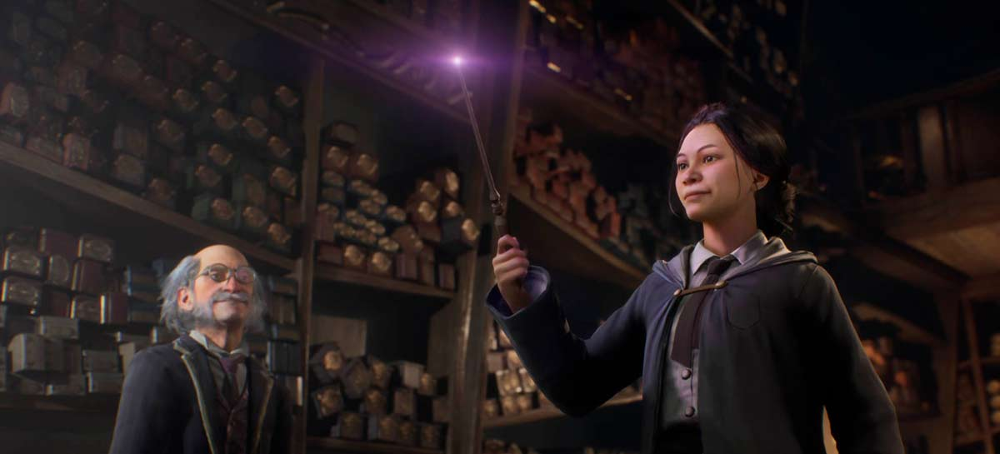
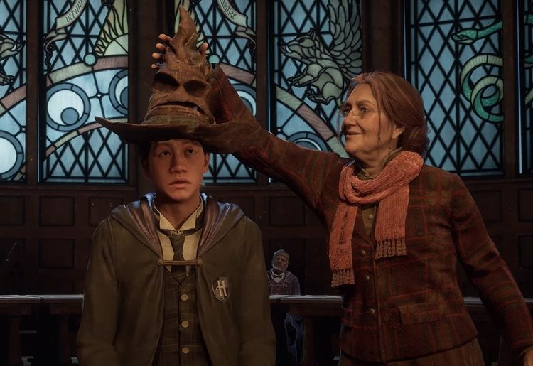

Sobre o jogo
Hogwarts Legacy é um próximo jogo de ação e aventura baseado no mundo de Harry Potter. O jogo será lançado para PlayStation 5, PlayStation 4, Xbox Series X|S, Xbox One e PC em 15 de abril de 2023.
Os jogadores assumirão o papel de um aluno do primeiro ano em Hogwarts nos anos 1800, antes dos eventos dos livros de Harry Potter. Eles explorarão o mundo de Hogwarts, aprenderão magia e participarão de aventuras emocionantes.
Atualizações
- 16 de fevereiro de 2023 - A Warner Bros. Interactive Entertainment anunciou que Hogwarts Legacy será lançado em 15 de abril de 2023.
- 10 de dezembro de 2022 - O primeiro trailer de jogabilidade de Hogwarts Legacy foi lançado.
- 21 de outubro de 2022 - A Warner Bros. Interactive Entertainment anunciou que Hogwarts Legacy será adiado para 2023.
Compre agora
Para comprar o jogo, visite um dos seguintes sites: